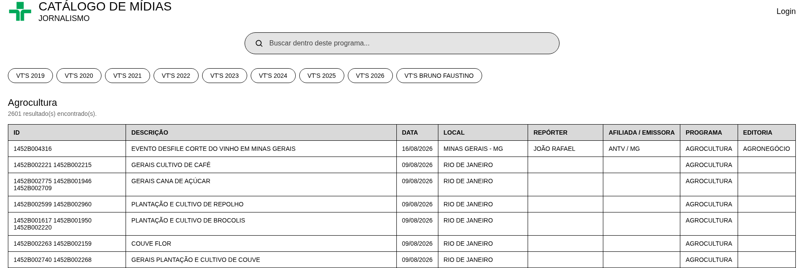
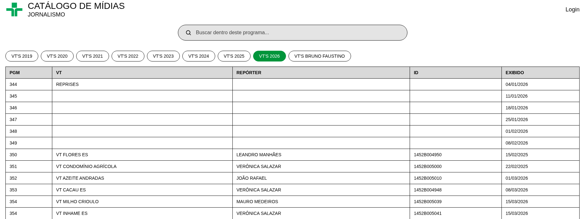

Trabalhos e Produções
Abaixo estão destacadas alguns dos principais trabalhos realizados:
Programa Agrocultura
Atuação técnica e executiva na produção audiovisual voltada para o setor agropecuário e sustentabilidade.
- Pesquisa de pautas, dados de mercado e mapeamento de fontes.
- Acompanhamento de decupagem e organização do fluxo de reportagens.
- Gestão de metadados, identificação e controle de matérias exibidas.
- Suporte à edição técnica e conferência do padrão de exibição em vídeo.
Jornal da Cultura
Participação no suporte e infraestrutura de produção do telejornalismo diário e em tempo real.
- Apoio na curadoria de imagens, checagem e inserção de recursos visuais.
- Articulação entre redação, equipes de reportagem e switcher.
- Organização de acervo digital de vídeos e roteiros de estúdio.
- Verificação de padrão técnico e agilidade na entrega de conteúdos diários.
Catálogo de Imagens
Desenvolvimento de catálogo de imagens para uso em produções audiovisuais e jornalísticas.



- Organização e classificação de imagens por temas e categorias.
- Criação de metadados para facilitar a busca e utilização das imagens.
- Suporte à equipe de produção na seleção de imagens para reportagens.
- Manutenção do acervo digital atualizado e acessível.
- Catálogo open-source.
- Sem Conflito de interesses